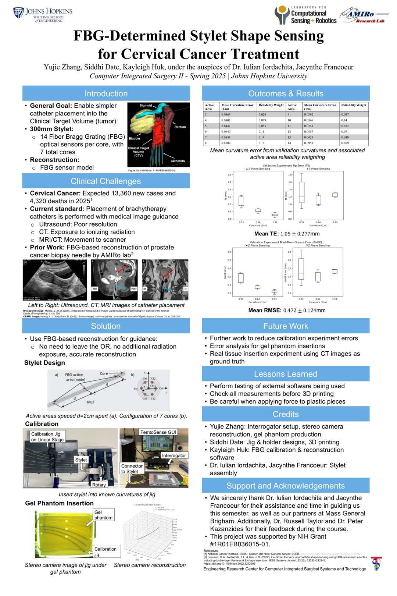

About
I am a Mechanical Engineering master's student at Johns Hopkins University, focused on robotics, computer vision, intelligent control, and medical robotic systems. My work sits at the intersection of perception, automation, and hardware-aware software engineering.
I have built systems for stereo vision depth estimation, ROS-based sensor integration, surgical needle shape sensing, robotic validation automation, and neural 3D reconstruction. I enjoy turning messy physical-world data into systems that can be measured, tested, and trusted.
My current interests include medical robotics, real-time sensing, 3D reconstruction, robot learning, and AI-assisted engineering workflows.

Education
Johns Hopkins University
M.S. CandidateMechanical Engineering
- Focus areas: robotics, computer vision, medical robotics, intelligent control, and computer-integrated surgery.
- Relevant work includes FBG needle shape sensing, stereo vision validation, robot automation, and 3D reconstruction.
Professional Experience
Software Engineering Intern | Hugo Surgical Robotic System
Jan 2026 - PresentMedtronic, North Haven, CT
- Develop automation tools across QNX, Linux, and Windows to support surgical robotic system deployment and field service workflows.
- Build validation utilities for software upgrades, image deployment, peripheral checks, and CyberArk-based authentication workflows.
- Contribute to LLM-assisted change impact analysis by extracting code diffs, structuring inputs, and evaluating model outputs against benchmark answers.
- Create Python-based evaluation tooling to compare AI-generated analysis with expected results and improve reliability of engineering review workflows.
Teaching Assistant | Computer Integrated Surgery Systems
Aug 2025 - Dec 2025Johns Hopkins University
- Developed automated grading and testing tools for surgical navigation assignments covering 3D registration, EM tracking calibration, and coordinate transforms.
- Analyzed algorithm performance under noise and perturbations to identify common failure modes in calibration and tracking pipelines.
- Guided students on validation design, synthetic data generation, and quantitative performance evaluation.
Control Systems Research Assistant
Mar 2024 - Jul 2024Shenzhen Institute of Advanced Technology, Chinese Academy of Sciences
- Studied gait-based adaptive oscillators for predicting assistive walking phase in exoskeleton systems.
- Optimized impedance control simulations in MATLAB Simulink and integrated disturbance observer modules to reduce impact-related motor vibration.
Research Experience
Part-Level Affordance Learning for Robotic Manipulation
Aug 2025 - Dec 2025Project Member
- Worked on part-level affordance understanding for robotic manipulation using the PartNet-Mobility dataset.
- Built a Blender Python data generation pipeline for standardized 3D object processing, multi-view rendering, RGB image generation, and semantic part mask creation.
- Explored language-guided affordance descriptions and mappings between actions and object parts for weakly supervised learning.
- Designed workflows to convert segmentation masks into affordance heatmaps for training language-conditioned affordance prediction models.
Real-Time 3D Shape Sensing for FBG-Based Surgical Needles
Dec 2024 - Jul 2025Project Lead | Advanced Medical Instrumentation and Robotics Lab, Johns Hopkins University
- Developed a real-time 3D shape sensing system for fiber Bragg grating surgical needles for image-guided brachytherapy applications.
- Integrated FBG interrogator data streams, calibration matrices, weighted least squares reconstruction, and ROS-based visualization.
- Validated the sensing pipeline with stereo vision and phantom experiments, achieving mean tip error of 1.05 +/- 0.277 mm and mean RMSE of 0.472 +/- 0.124 mm.
- Built a robotic insertion workflow with Cobot Toolkit support and demonstrated repeatable insertion depth control in the 150-220 mm range.
Vibration-Driven Capsule Robot Design and Validation
Jan 2023 - Dec 2023Project Lead | Shenzhen Key Laboratory of Biomimetic Robotics and Intelligent Systems | IEEE ROBIO 2023
- Designed a vibration-driven miniature robot for colon inspection in constrained environments.
- Built a motor testing platform, modeled force output, and analyzed speed, direction stability, and control precision.
- Programmed STM32-based motor control modules for speed control and experimental validation.
Tracked Colonoscopy Robot and Autonomous Navigation
Jan 2022 - Jan 2023Project Member | Shenzhen Key Laboratory of Biomimetic Robotics and Intelligent Systems | IEEE ICRA 2024
- Built a miniature tracked robot system for navigating deformable and unstructured colon environments.
- Implemented stereo vision depth estimation and Bezier-curve trajectory planning with OpenCV for wrinkle-aware path planning.
- Supported autonomous navigation experiments and achieved 88.11% accuracy in colon wrinkle detection.
Selected Projects
I like projects that connect physical systems with perception and intelligent software: tools that see, estimate, reconstruct, guide, or validate the real world.
Video-to-NeRF Vest 3D Reconstruction
3D Vision
Built a monocular video-to-NeRF reconstruction pipeline for a vest object. Extracted 215 frames from video, estimated camera poses with COLMAP, trained a neural 3D representation using NVIDIA Instant-NGP, and exported trained snapshots plus RGBA volume slices for inspection.
FBG Needle 3D Shape Sensing
Medical Robotics
Built a ROS2-based real-time shape sensing system for an FBG surgical needle, integrating calibration, optical signal processing, stereo vision validation, and robotic insertion experiments.
Robotics Picasso Drawing Robot
Kinematics / ControlDesigned and simulated an articulated-arm drawing robot for EECS 567 Robotics Modeling and Control. The system converts picture contours or user-typed character strings into board-frame trajectories, maps them into the robot workspace, and generates executable joint-space motion.
- Extracted single-connectivity image contours using Freeman Chain Code and applied contour smoothing before trajectory generation.
- Planned board-frame drawing paths for pictures, uppercase/lowercase English letters, and Arabic numbers.
- Implemented inverse kinematics, joint-space interpolation, forward kinematics validation, and joint angle/acceleration analysis.
- Designed a hybrid trajectory/force control strategy to keep the pen perpendicular to the palette while drawing.
Mechanical Design Portfolio
CADIncludes tracked colonoscopy robot CAD, 3D printer course design, SolidWorks Ferrari modeling, and mechanism-oriented prototyping work.
Skills
Programming and Software
Robotics
Computer Vision and AI
Design and Prototyping
Relevant Coursework
- Computer Integrated Surgery Systems
- Advanced Computer Integrated Surgery
- Robot Sensors and Actuators
- Machine Learning
- Computer Vision
- Control Systems
- Mechanical Design
- Medical Robotics
Contact
I am open to opportunities in robotics software, medical robotics, computer vision, automation, and AI-assisted engineering tools.